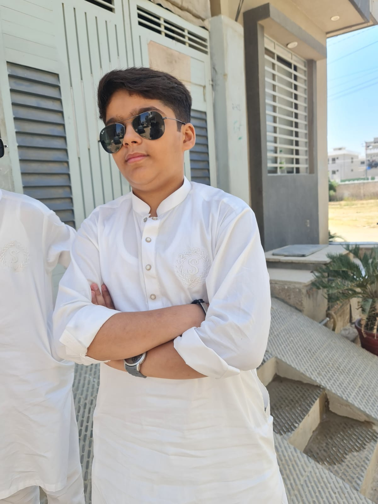

sami

Education and Interests:
i study in class 8 my school name is the horizon high.Education and interests serve as catalysts for personal growth, development, and fulfillment. Education provides individuals with knowledge and skills, while interests ignite passion and curiosity.
Hobbies:
Hobbies are the activities that bring us joy, relaxation, and a sense of purpose outside of our work or daily responsibilities. They are pursuits that we engage in willingly, driven by our interests and passions. my hobbies is playing football playing with friends and many more
CAREER AMBITIONS
i want to be a footballer or a bussnisman. Career ambition is also one of the biggest motivations for me to apply for the master programme. Upon graduation, I plan to work as a business analyst in the high-tech companies such as Baidu and Tencent, to specifically gain experience in user behaviour analysis. As I am a person seeking changes and enjoy evaluating and analysing data, creating solutions and communicating with many people, I hope to apply my skill to manage change in line with company goals and even to improve social welfare.